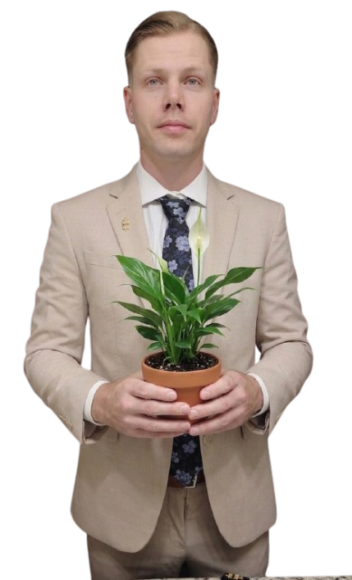
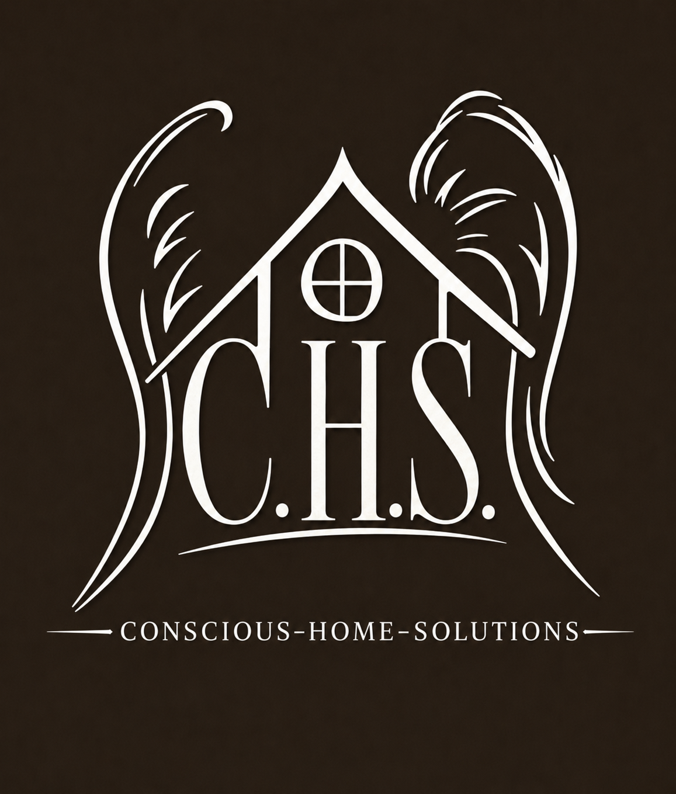
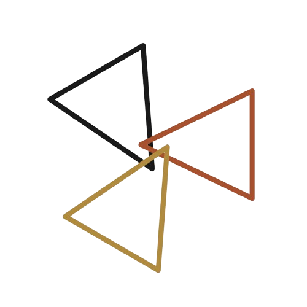
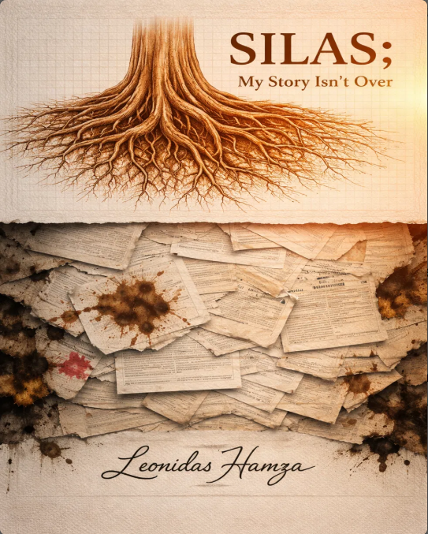

The Story Behind the Practice

Leonidas Hamza
Founder · Family Herbalist · Sociologist of Holistic Health
Leonidas Hamza began studying herbalism at 19 — not in a classroom, but out of necessity and curiosity, the way plant knowledge has always been passed down. That early self-directed study grew into a formal and rigorous pursuit spanning three distinct traditions:
- The biochemical and alkaline framework of Yahki Hickman — understanding the body as an electrical system requiring the right terrain to heal.
- The Vitalist tradition of Dr. John R. Christopher — completing the Family Herbalist Certificate through the School of Natural Healing, the oldest and most comprehensive herbal curriculum in North America.
- The evolutionary and energetic approach of Sajah Popham — through the School of Evolutionary Herbalism, connecting plant spirit, energetics, and the human constitution.
Today he is a Communications and Sociology student at Danville Area Community College and Franklin University, elected Student Trustee at DACC District 507, and President of Phi Theta Kappa Pi Omega Chapter — pursuing a Master of Social Work to build the community systems that complement the clinical practice.
He is a published author. His memoir — Silas: My Story Isn't Over — is the lived foundation beneath the frameworks. The work is personal before it is theoretical.
Conscious-Healing is the convergence of all of it.

The Broader MissionConscious Home Solutions
Healing doesn't stop at the body. The spaces people live in — their walls, their air, their infrastructure — are part of the biological terrain just as much as their lymphatic system. You cannot ask someone to heal inside a broken home.
Conscious Home Solutions LLC is the renovation and private housing arm of the Conscious brand family. Founded on 23 years of hands-on construction experience — beginning at age 9 alongside his father on rental properties — Leonidas Hamza built CHS on one foundational conviction: shortcuts are the most expensive decision you can make.
He spent years watching rushed maintenance jobs fall apart within months. Watching landlords band-aid problems that needed real solutions. Watching tenants settle for less because nobody stepped up to do things right. CHS exists because somebody finally did.
Every CHS property is built using a zero-plastics, premium-materials philosophy — copper plumbing, EMT conduit electrical grids, fire suppression systems, shiplap walls, and solar carport infrastructure over tenant parking. Not because it's trendy. Because it lasts. Because tenants deserve to live somewhere that was built with love and intention, not patched together with shortcuts and indifference.
The vision is simple: a tenant who rents from CHS should be able to call a friend and say — you need to come live here. They should walk through the door and feel the difference. They should see the detail. They should stay not because they have to, but because they want to.
Owning a home is one of the greatest financial liabilities a working-class family can carry — mortgage, insurance, taxes, maintenance, repairs. CHS carries all of that. Tenants keep their freedom, their peace of mind, and their money.
This is just the beginning. The long-term vision is to go block by block through Danville — acquiring distressed properties, gut-rehabbing them to the highest standard, and rebuilding the housing stock of an entire city. A staff of over a hundred people, paid well, doing work that matters. It is not a small dream. But it is already on paper, already branded, already presented — and already moving.
"We carry the liability, so you don't have to."

The VoiceSuperposed Broadcasting
Superposed Broadcasting is not a wellness channel. It's a range — law, quantum physics, finance and wealth strategy, trusts and investing, nutrition, and herbalism, treated with the same seriousness because they aren't separate subjects. A body can't heal in a home it's about to lose. A mind can't think clearly under financial systems it doesn't understand. Health, wealth, and law are the same conversation wearing different clothes. Find it on TikTok at @thesuperposed and YouTube at @OurStoryIsntOver.
The flagship segment, An Herb a Day, is exactly what it sounds like: one herb, one story, one piece of usable knowledge, at a time. It's the anchor, not the whole show — nutrition matters more than any single herb ever will, and neither matters if the systems around a person's life are broken.
Superposed Broadcasting isn't a side project. It's the front door. The name borrows from Quantum Social Theory — the idea that a person, like a particle, can hold more than one state at once: healer and student, builder and philosopher, herbalist and strategist. That's the premise of Conscious-Healing, applied to a single human being. You are not fixed. You are always in superposition, always capable of holding more than you were told you could.
"An Herb a Day."

Silas — My Story Isn't Over
Silas — My Story Isn't Over is the memoir underneath everything Conscious-Healing is built on. It's not a supplement to the work — it's the source of it. Every framework here, Phytosomaticpsychology, Phytosomaticsociology, the CHS housing philosophy, Superposed Broadcasting, traces back to a single life that had to be rebuilt from the ground up before any of it could be taught to anyone else.
The book is written under the pen name Silas Maximas Cotton, spanning 41 chapters and the story of surviving systems — legal, financial, medical, personal — that were never built to help the people inside them, and choosing, eventually, to work within those systems rather than against them. It's the same conviction that runs through the Trust structure behind these companies, the Student Trustee work, and the belief that healing has to happen at the level of the systems a person lives inside, not just the body.
Conscious-Healing exists because Silas's story didn't end where it could have. Everything after this page is what came next.
Publishing is currently in progress — more details soon.
The Foundationalist
This is not a party. It's a myth and an ideology — a return to the root. Not left, not right, not MAGA. Just the original promise: Life, Liberty, and the Pursuit of Happiness, applied without exception, without exclusion, and without compromise for political convenience.
The two existing parties are children of Lockean liberalism who forgot their parent. Democrats and Republicans both claim the myth but serve their factions. The Foundationalist position holds them both accountable to the founding promise they claim to believe in. That's not radical. That's the most American thing imaginable.
Its symbol is a chimera — an owl's head for wisdom and vigilance, an eagle's wings and talons as enforcer, a lion's body and paws for strength and authority — standing on the steps of a neoclassical capitol, restraining a donkey and an elephant. At its feet sits an open book: The Constitution and The Rule of Law. The steps around it are scattered with papers marked VOTE — the chaotic, ongoing work of democracy itself. This is the foundation the entire political landscape is meant to rest on, and the thing both parties have stopped standing on.
A house collapses if the foundation is weak. The citizens are the foundation of every system that keeps this country alive. Medicine says the heart pumps blood on its own — that's incomplete. The lungs fill the heart; every breath drives blood back to it before it ever fires. The people of this country are the lungs of America, feeding blood and oxygen to every system — macro, micro, and quantum. Cut that flow to a system, and it stagnates. Direct that flow to new systems, and they no longer depend on the one that caused the division in the first place.
"It is time the tables turn."
Our Mission
To practice wellness as both an individual and a collective act — balancing the systems within a single body, and targeting the systems a body is asked to live inside. Not one without the other.